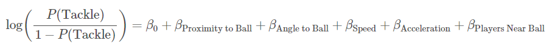
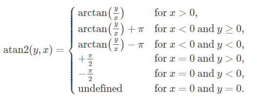
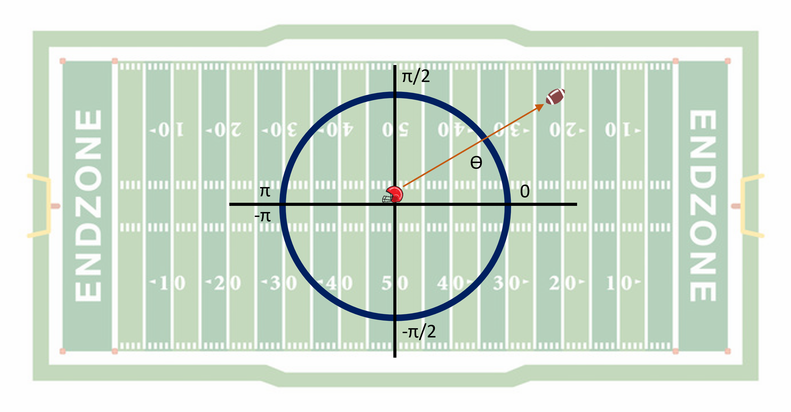
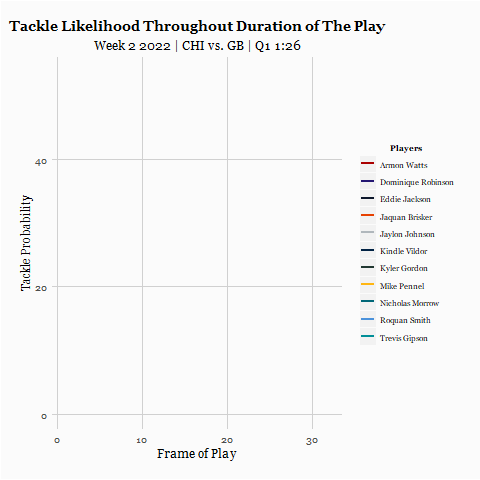
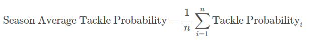
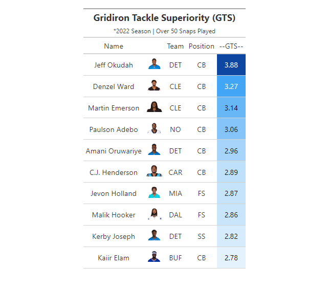
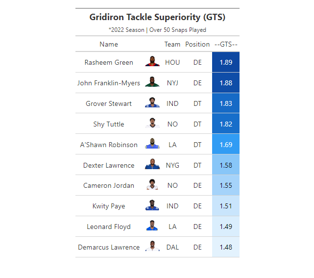
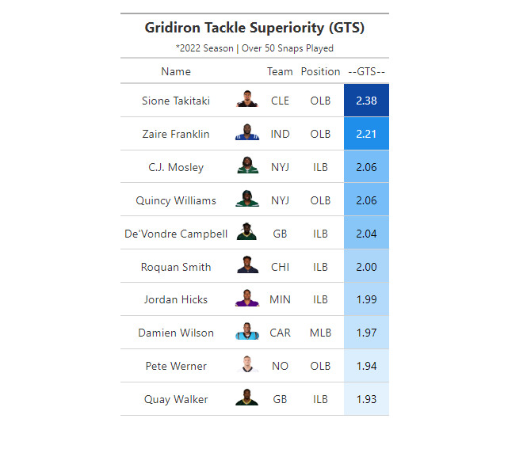

NFL Big Data Bowl 2024: Gridiron Tackle Superiority (GTS)
Introduction
This project presents Gridiron Tackle Superiority (GTS), a metric for calculating the expected likelihood of making a tackle. The model employs a binomial logistic regression that considers factors like proximity to the ball, speed, and angle of pursuit to identify an individual player’s likelihood of making a tackle at every moment of the play. The implications of this metric are two-fold: First, GTS shows how tackle probabilities change in real time. The model demonstrates how split-second decisions by both the offense and defense can change those probabilities, and how players may adjust to those decisions. Furthermore, the analysis can be mapped to actual tackle statistics, offering a method of measuring pure tackling ability. In theory, a player that records more tackles than expected could be judged to have stronger pure tackling ability after accounting for circumstances out of their control like offensive play calls, defensive formations, and other factors.
Methodology
The model utilizes a logistic regression that seeks to measure tackling probability as a function of five independent variables – Proximity to Ball, Relative Angle to Ball, Speed, Acceleration, and the Number of Players Near the Ball. Tackle probabilities are calculated across every frame of play for every defensive player on the field. The equation is defined as:

Proximity to Ball
Proximity to Ball is measured as the distance between the player and the ball in each frame of the play. The coordinates for both the ball and each defensive player are plotted on the field and the distance between both is measured with the formula for Euclidean distance, as shown below.

Where:
- (x1, y1) represent the coordinates for each player
- (x2, y2) represent the coordinates for the ball.
As each player moves closer to (or further from) the ball in each frame, those coordinates change, as does the ‘Proximity to Ball’ metric from the logistic regression.
Angle to Ball
A player’s relative angle to the ball is measured in a two-step process. First, we simply observe a player’s orientation on the field at any given moment. From there, we measure the angle between their orientation and the position of the ball. This helps determine if the player is primed to make a play on the ball and the degree to which that changes throughout the play. The chart below outlines this process in more detail. We define a 2-D cartesian coordinate system (in this case, represented by the football field), and calculate the angle of the player relative to the ball with a two-argument arctangent function.


Speed and Acceleration
Speed is measured in terms of distance traveled in yards/second, while acceleration is measured in yards/second^2. This is measured at each frame of the play and impacts both tackle probability in the moment, as well as how that probability changes as the play goes on.
Players Near Ball
This variable is defined as the number of players within 3 yards of the ball at every point of the play. As this value increases, the expected likelihood of surrounding players contributing to a tackle increases. A value of 3 yards was chosen somewhat arbitrarily, so there could be some refinement to this metric.
Example Play
The play below is from Week 2 of the 2022 season. This play occurs on first and ten with 1:26 left in the 1st quarter, as Aaron Rodgers completes a pass to Sammy Watkins for a gain of 24 yards. Throughout the play, the expected likelihood of completing a tackle changes as each player’s proximity to the ball, angle to the ball, speed, acceleration, and number of nearby teammates changes. In the end, Eddie Jackson makes the tackle, though both Jaquan Brisker and Kyler Gordon demonstrate a high probability of making a tackle moments before as well.


Calculating Gridiron Tackle Superiority
After defining these variables, the model is run and determines the individual tackle probabilities for all players in every frame of data for the first 9 weeks of the 2022 season. While the individual tackle probabilities are informative within a given play, we can also calculate the average likelihood of making a tackle throughout the entire season. From there, we’re able to determine the expected number of tackles for each defensive player and compare that to the actual tackles observed in the season. We define those metrics with the following equations.
Season average tackle probability is calculated as the sum of tackle probabilities for each frame a player was present on the field during the season divided by the sum of the total number of frames played. Frames played is found by taking the number of plays present for each player multiplied by the number of frames associated with those plays.

Expected tackles is a simple metric that can be found by taking the total season average tackle probability calculated in Step 1 divided by the total number of snaps played. This value represents the number of tackles anticipated for the season based on the calculated season average tackle probabilities and the number of opportunities the player had to participate in a tackle.

Lastly, we find Gridiron Tackle Superiority (GTS) by taking the index of the Actual Number of Tackles divided by the Expected Number of Tackles. This represents performance relative to expectations and can be thought of as pure tackling ability.

Ranking
Below are the GTS Rankings for the top 10 players in each position group. GTS presents a framework that can measure situation-independent tackling ability for each player. Expected tackles are measured as a function of both situational tackle probability, as well as the actual amount of time played on the field. This provides a more unique method of tracking tackling ability between starters and backups. While the model does set a threshold of at least 50 snaps played to prevent outlier performance, the rankings are highly inclusive. The charts outlined below segment GTS across three primary player groups - Defensive Line, Linebacker, and Secondary.



Conclusion
This submission proposes a novel metric to measure both tackle probability throughout the duration of a play, as well as overall tackle skill of individual players. Traditional metrics like solo tackles and assists understate the degree to which external circumstances impact the probability of making a tackle. Other more advanced defensive metrics also fall short of measuring pure tackling ability. Here, we control for some of those factors and add helpful context to observed tackle statistics.
This metric does leave room for future modifications. For example, GTS does not consider the individual skill of surrounding teammates, which may impact tackle probabilities. In addition, there may be room to normalize the metric further to reduce some observed discrepancies across position groups.
That said, GTS and the inter-play tackle probabilities calculated here make significant progress in evaluating tackle ability.
Appendix
Code for this project is available at https://github.com/Seanmgard/Big-Data-Bowl-2024